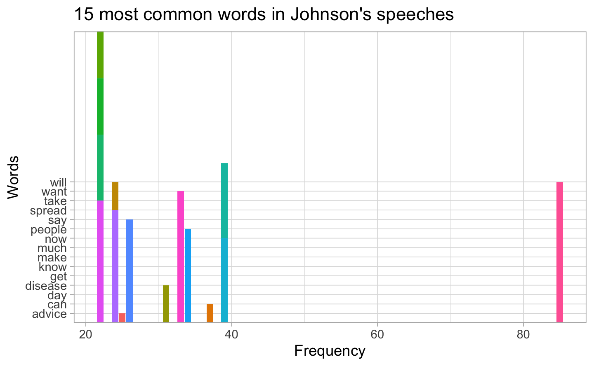
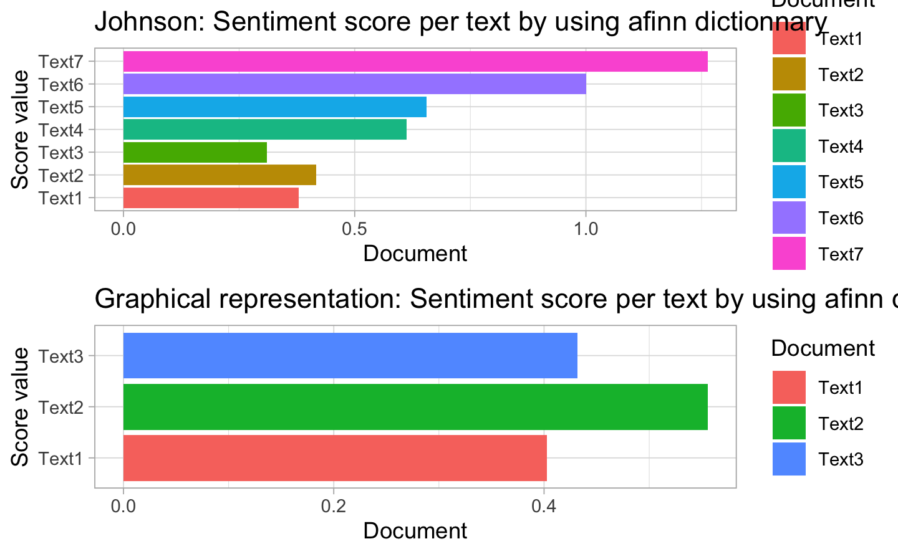
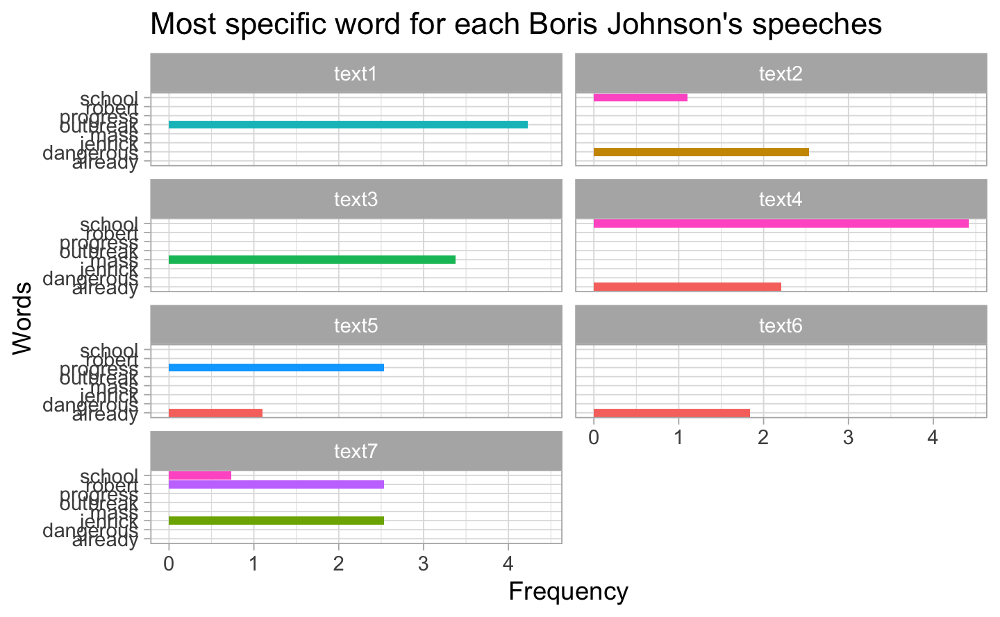
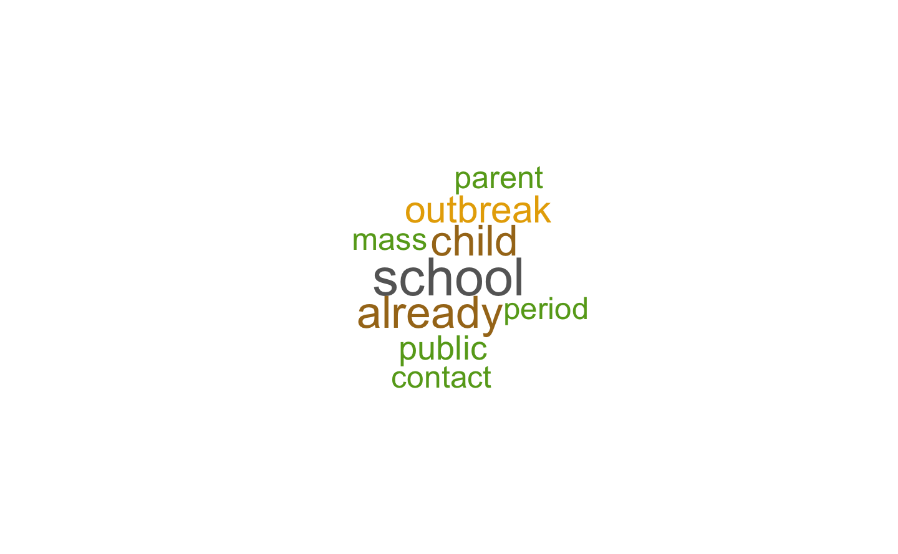

Chapter 3 Exploratory Data Analysis John Boris
3.1 Data manipulation

| word | Count |
|---|---|
| people | 7 |
| contact | 6 |
| days | 5 |
| disease | 5 |
| gatherings | 5 |
| social | 5 |
| advice | 4 |
| ensure | 4 |
| home | 4 |
| mass | 4 |
| peak | 4 |
| symptoms | 4 |
| avoiding | 3 |
| coming | 3 |
| conditions | 3 |
| health | 3 |
| it’s | 3 |
| london | 3 |
| nhs | 3 |
| spread | 3 |
| time | 3 |
| uk | 3 |
| unnecessary | 3 |
| we’ve | 3 |
| weeks | 3 |
| 70 | 2 |
| bring | 2 |
| campaign | 2 |
| country | 2 |
| difficult | 2 |
| disruptive | 2 |
| earlier | 2 |
| economy | 2 |
| emergency | 2 |
| epidemic | 2 |
| essential | 2 |
| fight | 2 |
| growing | 2 |
| hands | 2 |
| household | 2 |
| leading | 2 |
| lives | 2 |
| measures | 2 |
| minimise | 2 |
| period | 2 |
| play | 2 |
| pubs | 2 |
| reducing | 2 |
| remains | 2 |
| save | 2 |
| scientific | 2 |
| slow | 2 |
| stay | 2 |
| stop | 2 |
| suffering | 2 |
| washing | 2 |
| we’re | 2 |
| week | 2 |
| workers | 2 |
| 111 | 1 |
| 12 | 1 |
| 5 | 1 |
| 6 | 1 |
| access | 1 |
| action | 1 |
| active | 1 |
| advise | 1 |
| advisory | 1 |
| afternoon | 1 |
| ahead | 1 |
| allies | 1 |
| amazing | 1 |
| answer | 1 |
| approaching | 1 |
| attention | 1 |
| avoid | 1 |
| based | 1 |
| biggest | 1 |
| bodies | 1 |
| bringing | 1 |
| business | 1 |
| businesses | 1 |
| buy | 1 |
| challenge | 1 |
| chance | 1 |
| clubs | 1 |
| cobr | 1 |
| coincides | 1 |
| comparing | 1 |
| confined | 1 |
| continuous | 1 |
| cope | 1 |
| coronavirus | 1 |
| cough | 1 |
| creativity | 1 |
| critical | 1 |
| curve | 1 |
| daily | 1 |
| date | 1 |
| deal | 1 |
| decisions | 1 |
| delay | 1 |
| deployed | 1 |
| difference | 1 |
| distance | 1 |
| don’t | 1 |
| double | 1 |
| draconian | 1 |
| drastic | 1 |
| drugs | 1 |
| effective | 1 |
| effort | 1 |
| emergencies | 1 |
| emphatically | 1 |
| energy | 1 |
| essentials | 1 |
| events | 1 |
| excessive | 1 |
| exercise | 1 |
| experience | 1 |
| extend | 1 |
| fast | 1 |
| faster | 1 |
| fatalities | 1 |
| feel | 1 |
| fit | 1 |
| flatten | 1 |
| focusing | 1 |
| food | 1 |
| forward | 1 |
| fourteen | 1 |
| friends | 1 |
| front | 1 |
| g20 | 1 |
| g7 | 1 |
| global | 1 |
| growth | 1 |
| house | 1 |
| humanity | 1 |
| imf | 1 |
| including | 1 |
| key | 1 |
| kinds | 1 |
| lastly | 1 |
| leaders | 1 |
| leave | 1 |
| life | 1 |
| limit | 1 |
| listening | 1 |
| logically | 1 |
| londoners | 1 |
| lot | 1 |
| low | 1 |
| maximum | 1 |
| means | 1 |
| measure | 1 |
| millions | 1 |
| moment | 1 |
| moving | 1 |
| national | 1 |
| necessities | 1 |
| notes | 1 |
| objective | 1 |
| online | 1 |
| overwhelmingly | 1 |
| pay | 1 |
| playing | 1 |
| possibly | 1 |
| pregnant | 1 |
| pressure | 1 |
| protection | 1 |
| reason | 1 |
| reduce | 1 |
| relieve | 1 |
| responding | 1 |
| restaurants | 1 |
| ringing | 1 |
| risks | 1 |
| role | 1 |
| safe | 1 |
| sage | 1 |
| scrupulously | 1 |
| shielded | 1 |
| shielding | 1 |
| significant | 1 |
| slowing | 1 |
| spaces | 1 |
| special | 1 |
| sporting | 1 |
| start | 1 |
| steps | 1 |
| supplies | 1 |
| supporting | 1 |
| system | 1 |
| talking | 1 |
| temperature | 1 |
| theatres | 1 |
| tomorrow | 1 |
| transmission | 1 |
| travel | 1 |
| treatments | 1 |
| true | 1 |
| upward | 1 |
| venues | 1 |
| victims | 1 |
| vulnerable | 1 |
| weekend | 1 |
| women | 1 |
| world | 1 |
| worth | 1 |
#> <<DocumentTermMatrix (documents: 1, terms: 306)>>
#> Non-/sparse entries: 0/306
#> Sparsity : 100%
#> Maximal term length: 14
#> Weighting : term frequency - inverse document frequency (normalized) (tf-idf)
#> Sample :
#> Terms
#> Docs ’re ’ve access according across action active advice advise
#> 1 0 0 0 0 0 0 0 0 0
#> Terms
#> Docs advisory afternoon ahead allies also always amazing amongst and
#> 1 0 0 0 0 0 0 0 0 0
#> Terms
#> Docs answer anyone approaching around ask asked asking attention
#> 1 0 0 0 0 0 0 0 0
#> Terms
#> Docs avoid avoiding away back based believe best biggest bodies
#> 1 0 0 0 0 0 0 0 0 0
#> Terms
#> Docs bring bringing business businesses but buy campaign can case
#> 1 0 0 0 0 0 0 0 0 0
#> Terms
#> Docs cases challenge chance clear clearly clubs cobr coincides
#> 1 0 0 0 0 0 0 0 0
#> Terms
#> Docs coming comparing conditions confined contact continuous cope
#> 1 0 0 0 0 0 0 0
#> Terms
#> Docs coronavirus cough country creativity critical curve daily date
#> 1 0 0 0 0 0 0 0 0
#> Terms
#> Docs days days’ deal decisions delay deployed difference difficult
#> 1 0 0 0 0 0 0 0 0
#> Terms
#> Docs disease disruptive distance don’t double draconian drastic
#> 1 0 0 0 0 0 0 0
#> Terms
#> Docs drugs earlier economy effective effort emergencies emergency
#> 1 0 0 0 0 0 0 0
#> Terms
#> Docs emphatically energy ensure epidemic essentials even events
#> 1 0 0 0 0 0 0 0
#> Terms
#> Docs every everybody everyone everything excessive exercise
#> 1 0 0 0 0 0 0
#> Terms
#> Docs experience extend face far fast faster fatalities feel fight
#> 1 0 0 0 0 0 0 0 0 0
#> Terms
#> Docs first fit flatten focusing food forward fourteen friends front
#> 1 0 0 0 0 0 0 0 0 0
#> Terms
#> Docs gatherings get give global goes going good got group growing
#> 1 0 0 0 0 0 0 0 0 0 0
#> Terms
#> Docs growth hands health help high home house household humanity imf
#> 1 0 0 0 0 0 0 0 0 0 0
#> Terms
#> Docs important including just keep key kinds know largely last
#> 1 0 0 0 0 0 0 0 0 0
#> Terms
#> Docs lastly later leaders leading leave life limit listening lives
#> 1 0 0 0 0 0 0 0 0 0
#> Terms
#> Docs logically london londoners longer looks lot low make many mass
#> 1 0 0 0 0 0 0 0 0 0 0
#> Terms
#> Docs maximum may means measure measures might millions minimise
#> 1 0 0 0 0 0 0 0 0
#> Terms
#> Docs moment moving much national necessary necessities need new next
#> 1 0 0 0 0 0 0 0 0 0
#> Terms
#> Docs nhs nonessential normally notes now number objective obviously
#> 1 0 0 0 0 0 0 0 0
#> Terms
#> Docs one online others otherwise over overwhelmingly part
#> 1 0 0 0 0 0 0 0
#> Terms
#> Docs particularly parts pay peak people period play playing please
#> 1 0 0 0 0 0 0 0 0 0
#> Terms
#> Docs possible possibly pregnant pressure protection pubs rather
#> 1 0 0 0 0 0 0 0
#> Terms
#> Docs really reason reduce reducing relatively relieve remains
#> 1 0 0 0 0 0 0 0
#> Terms
#> Docs responding restaurants right ringing risks role safe sage said
#> 1 0 0 0 0 0 0 0 0 0
#> Terms
#> Docs save say saying scientific scrupulously second serious
#> 1 0 0 0 0 0 0 0
#> Terms
#> Docs seriously shielded shielding significant slow slowing social
#> 1 0 0 0 0 0 0 0
#> Terms
#> Docs something spaces special sporting spread start stay steps stop
#> 1 0 0 0 0 0 0 0 0 0
#> Terms
#> Docs suffering supplies supporting sure symptoms system take taken
#> 1 0 0 0 0 0 0 0 0
#> Terms
#> Docs talking tell temperature thank that the theatres think third
#> 1 0 0 0 0 0 0 0 0 0
#> Terms
#> Docs though time today tomorrow transmission travel treatments true
#> 1 0 0 0 0 0 0 0 0
#> Terms
#> Docs two unnecessary upward use venues victims vulnerable want
#> 1 0 0 0 0 0 0 0 0
#> Terms
#> Docs wanted washing way we’re week weekend weeks well whether whole
#> 1 0 0 0 0 0 0 0 0 0 0
#> Terms
#> Docs why will without women workers working world worth
#> 1 0 0 0 0 0 0 0 0| doc1 | doc2 | doc3 | doc4 | doc5 | doc6 | doc7 |
|---|---|---|---|---|---|---|
| 179 | 327 | 308 | 335 | 241 | 260 | 203 |
Now let’s compute the word frequencies (TF) by documents. First, the tokens are grouped by the indicator Document, which allows to count the words by documents. The the object is ungrouped.
These frqeuencies are represented with barplots. We only keep the 15 most frequent words for redability purpose and create barplots using ggplot and geom_col. The facetwrap function split the barplots per Document.
| Document | Text | n |
|---|---|---|
| doc1 |
This morning I chaired a meeting of the government’s COBR emergency committee on the Coronavirus outbreak. The First Ministers of Scotland and Wales and the First Minister and deputy First Minister of Northern Ireland also attended and we agreed to continue to work closely in the weeks and months ahead. We received a detailed briefing from the Chief Medical Officer and the Chief Scientific Advisor. And again I repeat my gratitude to both Chris and to Patrick. There have now been four deaths from coronavirus in the UK, and our deepest sympathies are obviously with their friends and families. Our action plan as you know sets out the four phases of our approach to tackling the virus: Contain, Delay, Research, and Mitigate. We remain in the Contain phase of the outbreak, but watching what is happening around the world, our scientists think containment is extremely unlikely to work on its own, and that is why we are making extensive preparations for a move to the delay phase. We are preparing various actions to slow the spread of this disease in order to reduce the strain it places on the NHS. The more we can delay the peak of the spread to the summer, the better the NHS will be able to manage. Patrick and Chris will give you some more detailed information on the latest advice we are giving the public today - and how we expect that advice to change as the outbreak develops. As things stand I’m afraid it bears repeating that the best thing we can all do is wash our hands for 20 seconds with soap and water. We will also take questions, because I know there are lots of things the public want to hear from our advisors about. But before that I want to stress the following things: First, we are doing everything we can to combat this outbreak, based on the very latest scientific and medical advice. Second, we have a truly brilliant NHS, where staff have responded with all the determination, compassion and skill that makes their service so revered across the world. And they will continue to have this government’s full support, my support, in tackling this virus on the frontline. Third, we will set out further steps in the days and weeks ahead to help people protect themselves, their family and in particular the elderly and vulnerable. And finally, while it is absolutely critical, it’s absolutely critical in managing the spread of this virus that we take the right decisions at the right time, based on the latest and best evidence. So we must not do things which have no or limited medical benefit, nor things which could turn out to be counterproductive. There is no hiding from the fact that the coronavirus outbreak will present significant challenges for the UK, just as it does in other countries. But if we continue to look out for one another, to pull together in a united and national effort, I have no doubt that we can and will rise to that challenge. And I’m now going to ask Patrick and then Chris to give their own perspective on where we are. |
1 |
| doc2 |
Good afternoon everybody and thank you very much for coming. I’ve just chaired a meeting of the government’s emergency committee including ministers from Scotland, Wales and Northern Ireland. And it’s clear that coronavirus, COVID-19, continues and will continue to spread across the world and our country over the next few months. We’ve done what can be done to contain this disease and this has bought us valuable time. But it is now a global pandemic. And the number of cases will rise sharply and indeed the true number of cases is higher - perhaps much higher - than the number of cases we have so far confirmed with tests. I’ve got to be clear, we’ve all got to be clear, that this is the worst public health crisis for a generation. Some people compare it to seasonal flu. Alas, that is not right. Owing to the lack of immunity, this disease is more dangerous. And it’s going to spread further and I must level with you, level with the British public, many more families are going to lose loved ones before their time. And the Chief Scientific Adviser will set out the best information we have on that in a moment. But as we’ve said over the last few weeks, we have a clear plan that we are now working through. And we are now moving to the next phase in that plan. Because this is now not just to attempt to contain the disease as far as possible, but to delay its spread and thereby minimise the suffering. If we delay the peak even by a few weeks, then our NHS will be in a stronger state as the weather improves and fewer people suffer from normal respiratory diseases, more beds are available and we’ll have more time for medical research. We can also act to stretch the peak of the disease over a longer period so that our society is better able to cope. The Chief Medical Officer will set out our lines of defence. We have to deploy these at the right time to maximise their effect. The most important task will be to protect our elderly and most vulnerable people during the peak weeks when there is the maximum risk of exposure to the disease and when the NHS will be under the most pressure. So the most dangerous period is not now but some weeks away depending on how fast it spreads. Today therefore we are moving forward with our plan. From tomorrow, if you have coronavirus symptoms, however mild – either a new continuous cough or a high temperature – then you should stay at home for at least 7 days to protect others and help slow the spread of the disease. We advise all those over 70 and those with serious medical conditions against going on cruises and we advise against international school trips. At some point in the next few weeks, we are likely to go further and if someone in a household has those symptoms, we will be asking everyone in the household to stay at home. We are not introducing this yet for reasons Sir Patrick will explain, but I want to signal now that this is coming down the track. We are considering the question of banning major public events such as sporting fixtures. The scientific advice as we’ve said over the last couple of weeks is that banning such events will have little effect on the spread. But there is also the issue of the burden that such events can place on public services. So we’re discussing these issues with colleagues in all parts of the United Kingdom and will have more to say shortly about the timing of further action in that respect. At all stages, we have been guided by the science, and we will do the right thing at the right time. We are not - repeat not - closing schools now. The scientific advice is that this could do more harm than good at this time. But we are of course keeping this under review and this again may change as the disease spreads. Schools should only close if they are specifically advised to do so. And that remains our advice. There is no escaping the reality that these measures will cause severe disruption across our country for many months. The best scientific advice is that this will help us slow the disease and save lives. There will be detailed information available on the NHS website and from 111 online. But I want to stress something that is very important in the wake of what we’re saying this afternoon – I urge people, who think in view of what we’re saying about their potential symptoms that they should stay at home, not to call 111 but to use the internet for information if they can. I also want at this stage to speak directly to older people. Because this disease is particularly dangerous for you, for older people, even though the vast majority this will be a mild to moderate illness, I know that many people will be very worried. And I think we should all be thinking about our elderly relatives, the more vulnerable members of their family, our neighbours, and everything we can do to protect them over the next few months. We’re going to need to mobilise millions of people to help and support each other. And I just want to you to know that the government will do all we can to help you and your family during this period. We’re not just going to be as you saw yesterday supporting the economy during this period, we will be providing money and many other forms of support, and helping communities to support each other. And as we have done over the last few weeks, we will continue to provide, as soon as we have it, as much clear scientific and medical information as we can. So I’d like to end by repeating the two important messages, with which you will have become familiar – it is still vital, perhaps more vital than ever – that we remember to wash our hands. And lastly of course even if things seem tough now, just to remember, that we will get through this, this country will get through this epidemic, just as it has got through many tougher experiences before if we look out for each other and commit wholeheartedly to a full national effort. |
1 |
| doc3 |
Good afternoon everybody, thank you very much for coming. I wanted to bring everyone up to date with the national fight back against the new coronavirus and the decisions that we’ve just taken in COBR for the whole of the UK. As we said last week, our objective is to delay and flatten the peak of the epidemic by bringing forward the right measures at the right time, so that we minimise suffering and save lives. And everything we do is based scrupulously on the best scientific advice. Last week we asked everyone to stay at home if you had one of two key symptoms: a high temperature or a new and continuous cough. Today, we need to go further, because according to SAGE [the Scientific Advisory Group for Emergencies] it looks as though we’re now approaching the fast growth part of the upward curve. And without drastic action, cases could double every 5 or 6 days. So, first, we need to ask you to ensure that if you or anyone in your household has one of those two symptoms, then you should stay at home for fourteen days. That means that if possible you should not go out even to buy food or essentials, other than for exercise, and in that case at a safe distance from others. If necessary, you should ask for help from others for your daily necessities. And if that is not possible, then you should do what you can to limit your social contact when you leave the house to get supplies. And even if you don’t have symptoms and if no one in your household has symptoms, there is more that we need you to do now. So, second, now is the time for everyone to stop non-essential contact with others and to stop all unnecessary travel. We need people to start working from home where they possibly can. And you should avoid pubs, clubs, theatres and other such social venues. It goes without saying, we should all only use the NHS when we really need to. And please go online rather than ringing NHS 111. Now, this advice about avoiding all unnecessary social contact, is particularly important for people over 70, for pregnant women and for those with some health conditions. And if you ask, why are we doing this now, why now, why not earlier, or later? Why bring in this very draconian measure? The answer is that we are asking people to do something that is difficult and disruptive of their lives. And the right moment, as we’ve always said, is to do it when it is most effective, when we think it can make the biggest difference to slowing the spread of the disease, reducing the number of victims, reducing the number of fatalities. And as we take these steps we should be focusing on the most vulnerable. So third, in a few days’ time – by this coming weekend – it will be necessary to go further and to ensure that those with the most serious health conditions are largely shielded from social contact for around 12 weeks. And again the reason for doing this in the next few days, rather than earlier or later, is that this is going to be very disruptive for people who have such conditions, and difficult for them, but, I believe, it’s now necessary. And we want to ensure that this period of shielding, this period of maximum protection coincides with the peak of the disease. And it’s now clear that the peak of the epidemic is coming faster in some parts of the country than in others. And it looks as though London is now a few weeks ahead. So, to relieve the pressure on the London health system and to slow the spread in London, it’s important that Londoners now pay special attention to what we are saying about avoiding non-essential contact, and to take particularly seriously the advice about working from home, and avoiding confined spaces such as pubs and restaurants. Lastly, it remains true as we have said in the last few weeks that risks of transmission of the disease at mass gatherings such as sporting events are relatively low. But obviously, logically as we advise against unnecessary social contact of all kinds, it is right that we should extend this advice to mass gatherings as well. And so we’ve also got to ensure that we have the critical workers we need, that might otherwise be deployed at those gatherings, to deal with this emergency. So from tomorrow, we will no longer be supporting mass gatherings with emergency workers in the way that we normally do. So mass gatherings, we are now moving emphatically away from. And I know that many people – including millions of fit and active people over 70 – may feel, listening to what I have just said, that there is something excessive about these measures. But I have to say, I believe that they are overwhelmingly worth it to slow the spread of the disease, to reduce the peak, to save life, minimise suffering and to give our NHS the chance to cope. Over the last few days, I have been comparing notes and talking to leaders around the world and I can tell you that the UK is now leading a growing global campaign amongst all our friends and allies, whether in the G7, the G20, the UN, the IMF – all those bodies in which we play a significant role. We’re leading a campaign to fight back against this disease. To keep the economy growing, to make sure that humanity has access to the drugs and the treatments that we all need, and the UK is also at the front of the effort to back business, to back our economy, to make sure that we get through it. I know that today we are asking a lot of everybody. It is far more now than just washing your hands - though clearly washing your hands remains important. But I can tell you that across this country, people and businesses in my experience are responding with amazing energy and creativity to the challenge that we face, and I want to thank everybody for the part that you are playing and are going to play. |
1 |
| doc4 |
Good afternoon. And thanks for coming or for indeed tuning in to these daily updates. I want to introduce, I’m sure you know Jenny Harries, Deputy Chief Medical Officer for England, and you know Sir Patrick Vallance, Chief Scientific Advisor. I want to tell you where we got to in our national fightback against the coronavirus. Today the Scientific Advisory Group for Emergencies met to discuss the latest evidence on the spread of the virus and the effects of the measures we have already taken to slow its spread. And Patrick is going to update us in a second about that. I want to repeat that everyone – everyone – must follow the advice to protect themselves and their families, but also – more importantly – to protect the wider public. So stay at home for seven days if you think you have the symptoms. Remember the two key symptoms are high temperature, a continuous new cough. Whole household to stay at home for 14 days if one member in that household thinks he/she has the symptoms. Avoid all unnecessary gatherings – pubs, clubs, bars, restaurants, theatres and so on and work from home if you can. Wash your hands. And we have already announced in the last few days we will massively scale up our testing capacity in the weeks ahead so we hit 25,000 tests a day. A huge public information campaign is being rolled out so people get all the information they need to protect themselves and others. We are asking retired healthcare professionals to come back and help us cope, help the NHS to cope, with this unprecedented challenge. And we will continue as we have from the beginning to do the right thing at the right time and to follow the best scientific advice. And we come today to the key issue of schools where we have been consistently advised that there is an important trade off. And so far the judgment of our advisers has been that closing schools is actually of limited value in slowing the spread of the epidemic. And that is partly because counterintuitively schools are actually very safe environments. And in this disease and epidemic children and young people are much less vulnerable. And hitherto the advice has been that we should keep schools open if possible in order to reduce the pressure on the NHS and on all other public services. But I think you’ll agree I have always been very clear that this is a balanced judgment and one that we have kept under constant review. So looking at the curve of the disease and looking at where we are now – we think now that we must apply downward pressure, further downward pressure on that upward curve by closing the schools. So I can announce today and Gavin Williamson making statement now in House of Commons that after schools shut their gates from Friday afternoon, they will remain closed for most pupils – for the vast majority of pupils- until further notice. I will explain what I mean by the vast majority of pupils. The objective is to slow the spread of the virus and we judge it is the right moment to do that. But of course, as I’ve always said, we also need to keep the NHS going and to treat the number of rising cases. So we need health workers who are also parents to continue to go to work. And we need other critical workers with children to keep doing their jobs too – from police officers who are keeping us safe to the supermarket delivery drivers, social care workers who look after the elderly and who are so vital. We will be setting out more details shortly about who we mean in these groups. So we therefore need schools to make provision for the children of these key workers who would otherwise be forced to stay home. And they will also need to look after the most vulnerable children. This will mean there will of course be are far fewer children in schools and that will help us to slow the spread of the disease. And these measures are crucial to make sure the critical parts of the economy keep functioning and public services keep functioning. So we are simultaneously asking nurseries and private schools to do the same, and we are providing financial support where it is needed. We are making provisions to supply meals and vouchers for children eligible for free school meals. And where some schools are already doing this, I want to make it clear we will reimburse the cost. And of course this does mean that exams will not take place as planned in May and June. Though we will make sure that pupils get the qualifications they need and deserve for their academic career. Now I know that these steps will not be easy for parents or teachers. And for many parents, this will be frustrating, and it will make it harder for them to go out to work. And of course that is one of the reasons we haven’t wanted to go ahead and that’s why we are working now on further measures to ensure that we support not just businesses but also individuals and their families to keep our economy going as Rishi Sunak the Chancellor outlined yesterday. I also need to remind parents that, as we have already advised, children should not be left with older grandparents, or older relatives, who may be particularly vulnerable or fall into some of the vulnerable groups and I know that will be difficult too. And I want to thank families for their sacrifice at this difficult time. I want to thank whole country for the efforts people are making to comply with these measures. I particularly want to thank the teachers, head teachers and all the support staff who keep schools going who will make these exceptional arrangements work, for the benefit of us all. By looking after the children of key workers they will be a critical part of our fightback against Coronavirus. As I have said, we will take the right steps at the right time, guided by the science. We believe the steps we have already taken, together with those I am announcing today, are already slowing the spread of the disease. But we will not hesitate to go further, and faster, in the days and weeks ahead. And we will do whatever it takes to so that we beat it together. |
1 |
| doc5 |
I want to begin by thanking everyone, by thanking you, in the media, and also thanking everyone for the huge efforts that the country is making to comply with the advice that we’ve been given And we’re asking such a huge amount, asking students to put their education on hold, we’re asking people not to socialise in the normal way And already we can see the impact that this is having on the UK economy and on business, on great, great companies And so it’s vital that we in Government stand behind them when what we are asking everyone to do is so crucial for saving literally thousands of lives by defeating this virus And I am conscious as the days have gone by that people will want to know how long we are expecting them to keep it up And I wanted to try to say something today about how I see the timescale of this campaign and where we’re going and what we need to do I do think, looking at it all, that we can turn the tide within the next 12 weeks And I am absolutely confident that we can send coronavirus packing in this country but only if we take the steps, we all take the steps we have outlined, And that is vital because that is how we are going to reduce the peak and once we’ve achieved that, and I think that we will, if take the steps that I have said, then the scientific progress that we’re making will really start to come into play and I wanted to discuss a little bit of that this afternoon with you because we are rapidly becoming so much better at understanding the genomics at the heart of this virus, a lot of that is going on in this country, we’re getting better at understanding the medicines that may treat and cure it And today we have put the first British corona patient into a randomised trial for drugs that may treat the disease UK experts and scientists expect to start trials for the first vaccine within a month And above all we are getting better at testing This crisis is so difficult because the enemy is invisible And the answer is to remove the cloak of invisibility And to identify the virus, and to be able to know which of us, is carrying it or who has actually had it and now got over it And to give you an idea of what is coming down the track We are in negotiations today to buy a so called antibody test As simple as a pregnancy test That could tell whether you have had the disease And it’s early days, but if it works as its proponents claim then we will buy literally hundreds of thousands of these kits as soon as practicable because obviously it has the potential to be a total gamechanger Because once you know that you have had it, you know that you are likely to be less vulnerable, you’re less likely to pass it on, and you can go back to work And of course by the same token we are massively increasing the testing to see whether you have it now And ramping up daily testing from 5000 a day to 10,000 to 25,000 and then up to 250,000 And that knowledge of where the virus is, will make a huge difference to our management of the disease and our ability to reduce disruption and economic difficulties And I wanted to set that out because this is rapidly coming down the track as I say, but it will take time to come on stream And that is why in the meantime, to get back to a theme that you know I’m going to repeat, it is absolutely vital that we follow the advice that we’ve been hearing over the last few days, The announcements we’ve already made about staying at home if you have the symptoms, if your family has the symptoms, about avoiding unnecessary contact Avoiding gatherings where you may pick up the disease pubs, bars, restaurants Please, please follow all that advice scrupulously Work from home if you possibly can Wash your hands, wash your hands And it’s by this combination of ruthless, determined, collective action and scientific progress that we’re already seeing that we will succeed And I know how difficult it may be, or it may seem right now, but if we do this together we will save, as I say, many many thousands of lives and to everybody in the UK, business world, everybody who is worried about their jobs, and everybody who faces difficulties because of the advice that we are giving, I say to business, stand by your employees, stand by your workers because we will stand by you And you’ll be hearing more about that in the course of the next day or so And that is how, by a mixture of determined, collective action and scientific progress, I have absolutely no doubt that we will turn the tide of this disease and beat it together. |
1 |
| doc6 |
Good afternoon and thank you for coming again, Today I am joined by the Chancellor of the Exchequer Rishi Sunak and Jennie Harries deputy chief medical officer. Yesterday I set out the ambition of this government to turn the tide against coronavirus within 3 months. And I want to repeat that determination today. We are going to do it with testing. We are going to do it with new medicines, and with new digital technology that will help us to see the disease as it is transmitted, and thereby, by eliminating it, to stamp it out. And above all, now we are going to defeat this disease with a huge national effort to slow the spread by reducing unnecessary social contact. And I want to thank everyone for following the guidance we issued on Monday: to stay at home for 7 days if you think you have the symptoms, for 14 days if anyone in your household has either of the symptoms – a new continuous cough or a high temperature. To avoid pubs, bars, clubs and restaurants. To work from home if at all possible. Keep washing your hands. I know it has been tough. I know it has been inconvenient. But these actions that we’re all taking together are already helping to take the strain off our NHS. Bit by bit, day by day, by your actions, your restraint and your sacrifice, we are putting this country in a better and stronger position, where we will be able to save literally thousands of lives, of people of all ages, people who don’t deserve to die now. People whose lives can, must, and will be saved. And as we take these actions together and as we make these sacrifices, we can see the impact on the real economy. Already, fantastic British companies, already under huge strain, big and small. Workers who are finding that their jobs are under threat or are going, through no fault of their own. And to all of them, we in government say: We will stand by you. And I say that to companies, remember our joint objective: to beat this virus. And we will do everything in our power to help. And in just a minute, Rishi is going to explain how we are going to help workers of all kinds to get through this crisis, Supporting you directly in a way that Government has never been done before, in addition to the package we have already set out for business. And of course these measures are intended to be temporary and of course I am confident that, in time, the UK economy is going to bounce back. Of course it is. But I must be absolutely clear with you: the speed of that eventual recovery depends entirely on our ability, our collective ability, to get on top of the virus now. And that means we have to take the next steps, on scientific advice and following our plan, we are strengthening the measures announced on Monday which you will remember. And of course people have already made a huge effort to comply with those measures for avoiding unnecessary social contact. But we need now to push down further on that curve of transmission between us. And so following agreement between all the formations of the United Kingdom, all the devolved administrations, We are collectively telling, telling cafes, pubs, bars, restaurants to close tonight as soon as they reasonably can, and not to open tomorrow. Though to be clear, they can continue to provide take-out services. We’re also telling nightclubs, theatres, cinemas, gyms and leisure centres to close on the same timescale. Now, these are places where people come together, and indeed the whole purpose of these businesses is to bring people together. But the sad things is that today for now, at least physically, we need to keep people apart. And I want to stress that we will review the situation each month, to see if we can relax any of these measures. And listening to what I have just said, some people may of course be tempted to go out tonight. But please don’t. You may think you are invincible, but there is no guarantee you will get mild symptoms, and you can still be a carrier of the disease and pass it on to others So that’s why, as far as possible, we want you to stay at home, that’s how we can protect our NHS and save lives. To repeat, I know how difficult this is, how it seems to go against the freedom-loving instincts of the British people. And I also know much, right now, workers and business deserve the financial reassurance we are giving them. But we will get through this. We will get through it together, and we will beat this virus. And to ram that point home: the more effectively we follow the advice that we are given, the faster this country will stage both a medical and an economic recovery in full. |
1 |
| doc7 |
Good afternoon everyone Thank you for coming, and thank you to Robert Jenrick, the Communities Secretary, and Dr Jenny Harries, the Deputy Chief Medical Officer. I want again to thank everyone in the country today for the huge effort that we are collectively making. I want to thank the amazing workers in the NHS, everybody working in social care, in every sector, in food distribution, transport, you name it – absolutely everyone who is keeping this country going today. And I want to thank everyone who is being forced to do something differently today. Everyone who didn’t visit their mum for Mother’s Day but Facetimed them, Skyped them, rang them instead. Thank you for your restraint and for what you did. Everyone who was forced to close a pub or a restaurant or a gym or any other business that could have done fantastic businesses on a great day like this. Thank you for your sacrifice, I know how tough it must be. And I can tell you again that this government will be standing behind you – behind British business, behind British workers, employees, self-employed – throughout this crisis. And the reason we are taking these unprecedented steps to prop up businesses, support businesses and support our economy and these preventative measures is because we have to slow the spread of the disease and to save thousands of lives. Today we have come to the stage of our plan that I advertised at the outset, when we first set out the plan of the UK government. When we have to take special steps to protect the particularly vulnerable. I said the moment would come where we needed to shield those with serious conditions. There are probably about 1.5 million in all. And in a minute Robert Jenrick will set out the plan in detail. But this shielding will do more than any other single measure that we are setting out to save life. That is what we want to do. Also to reduce infection and to slow the spread of the disease. We have to do more to make sure that the existing measures that we are taking are having the effect that we want. So it is crucial that people understand tomorrow that the schools are closed. And tomorrow you should not send your child to school unless you have been identified as a key worker. And more generally in the view of the way people have responded over the last few days to the measures we have set out I want to say a bit more about how we interact outdoors. Of course I want people to be able to go to the parks and open spaces and to enjoy themselves – it is crucial for health and mental and physical wellbeing. But please follow the advice and don’t think that fresh air in itself automatically provides some immunity. You have to stay two metres apart; you have to follow the social distancing advice. And even if you think you are personally invulnerable, there are plenty of people you can infect and whose lives will then be put at risk. And I say this now – on Sunday evening – take this advice seriously, follow it, because it is absolutely crucial. And as I have said throughout this process we will keep the implementation of these measures under constant review and, yes of course, we will bring forward further measures if we think that is necessary. Always remember that in following this advice- and I know how difficult that is – that each and every one of us. You are doing your bit in following this advice to slow the spread of this disease. The more we collectively slow the spread, the more time we give the NHS to prepare, the more lives we will save, the faster we will get through this. And always remember – we will get through this, and we will beat it together. Next Robert Jenrick to outline the shielding measures. |
1 |

We see that the list of 15 most frequent term are due to doc 2 ,4 and 3.
Now we want to know which are the most frequent term for each document

Now we repeat the same analysis using the TF-IDF.
 We can see that the term “measures” or “disease” appaear several times. It is normal since the could of words was built from the frequencies within each document. We need first to aggregate the frequencies per termms(i.e sum iver the documents). Then er produce the could
We can see that the term “measures” or “disease” appaear several times. It is normal since the could of words was built from the frequencies within each document. We need first to aggregate the frequencies per termms(i.e sum iver the documents). Then er produce the could


3.2 Zipf’s law
Now, we illustrate the Zipf’s law on the discous of Boris Jonhson. The terms are ranked by their frequency (rank=1 for the most frequent), then plotted versus its rank. This is easily obtained using quanteda.

Now on the log scale this gives a linear relation